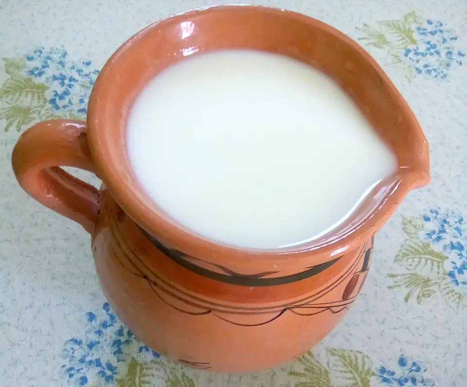
Lben 1 cropped.jpg

Sabah HAANA; crop: Kittycat97 · CC BY-SA 4.0
Ces photos représentent les types de produits proposés. Elles ne sont pas des photos des lots, emballages ou lieux de production de Khadija. Vérifiez la présentation avec Khadija avant confirmation.
هذه صور توضيحية لأنواع المنتجات، وليست صوراً للمنتجات أو العبوات الفعلية لدى خديجة. يرجى تأكيد الشكل والتوفر قبل اعتماد الطلب.
Photographies téléchargées depuis Wikimedia Commons, redimensionnées et compressées en WebP, sans modification générative. L’affichage peut recadrer la photo. Les licences indiquées restent applicables aux images. Pour la belboula, une photo fidèle est encore attendue.

Sabah HAANA; crop: Kittycat97 · CC BY-SA 4.0
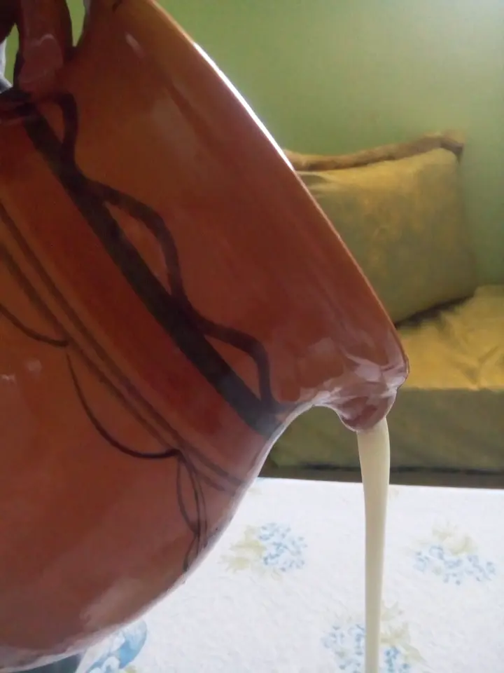
Sabah HAANA · CC BY-SA 4.0
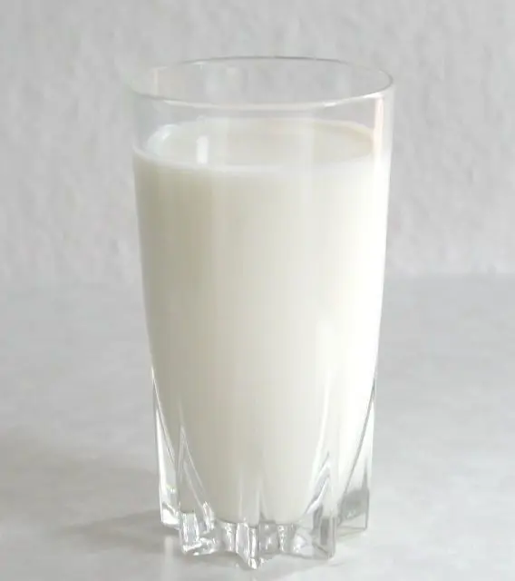
Stefan Kühn · CC BY-SA 3.0
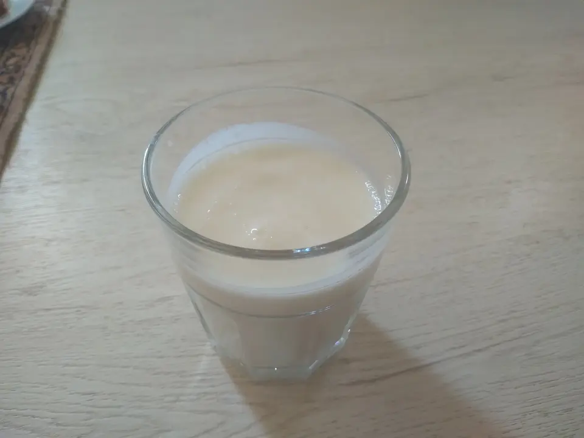
Mint eggy93 · CC BY-SA 4.0
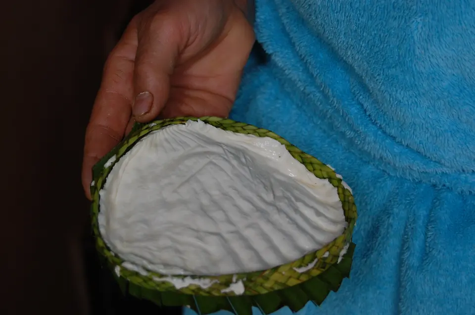
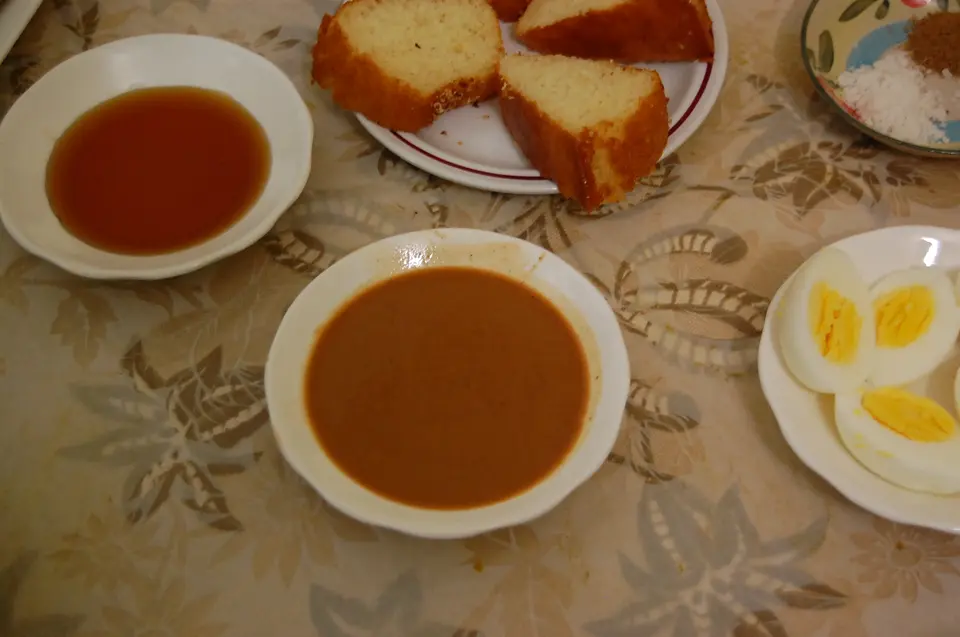
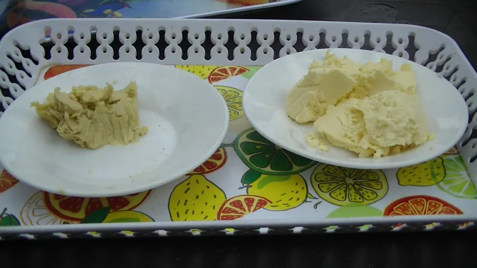
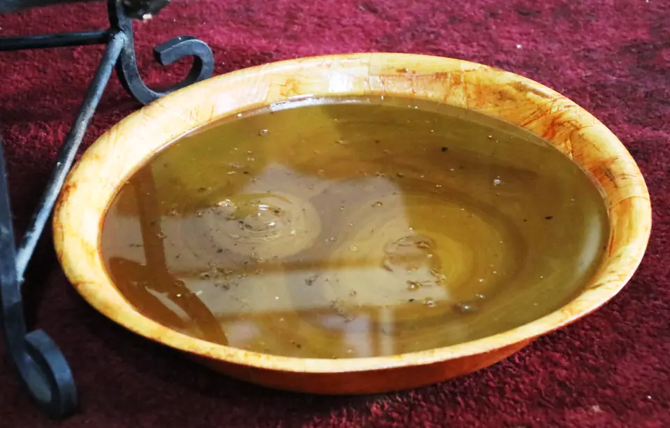
Werner100359 · CC BY-SA 4.0
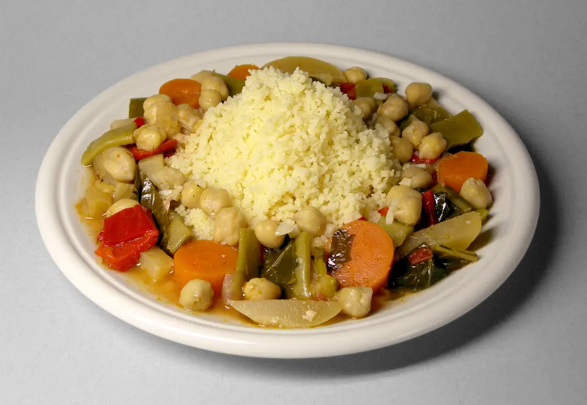
Rainer Zenz · CC BY-SA 3.0
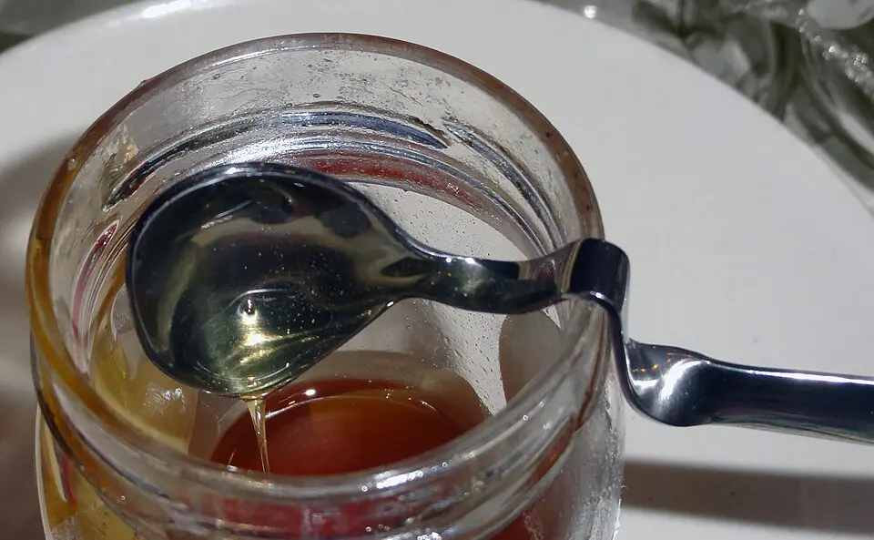
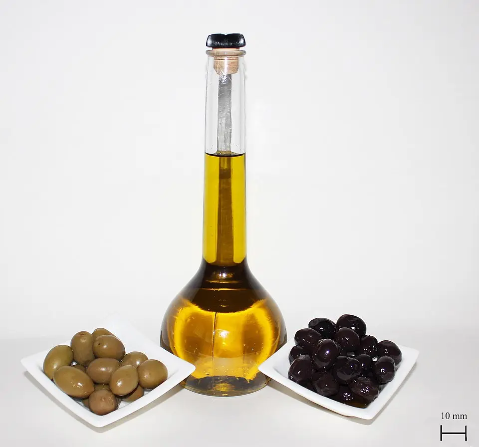
Poyraz 72 · CC BY-SA 4.0
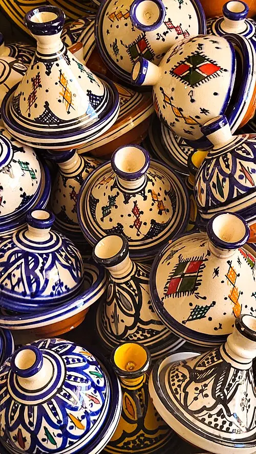
Oumaima Loudini · CC BY-SA 4.0
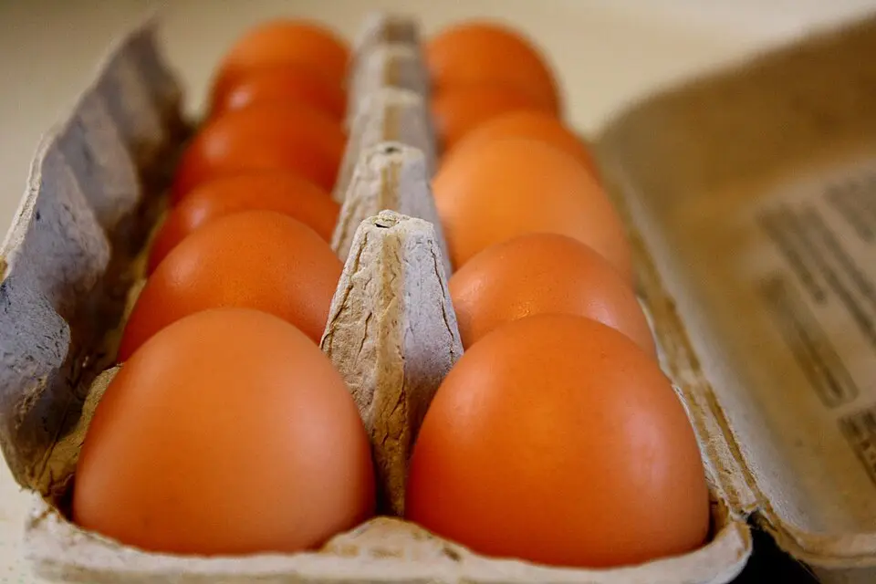
Photos public domain.com · Public domain
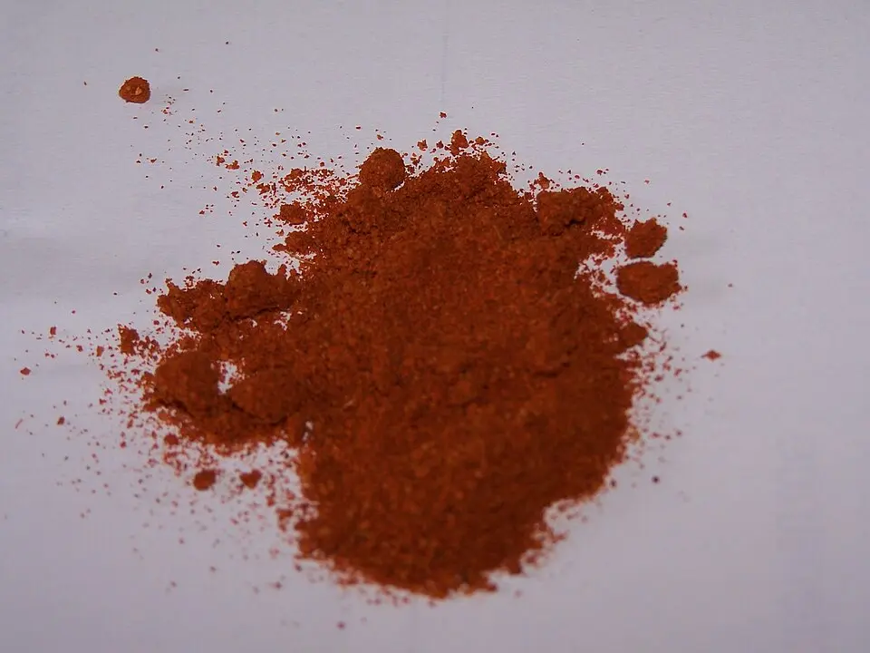
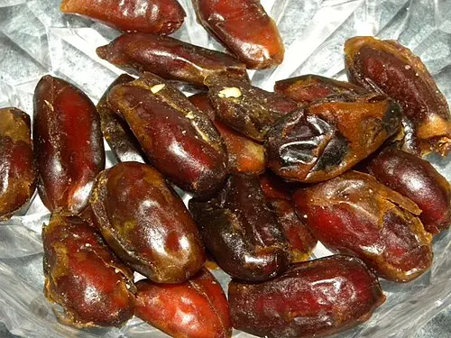
Vicki Nunn · Public domain
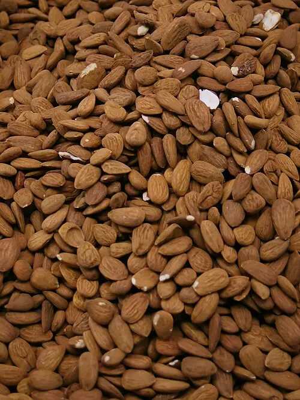
Hans Hillewaert · CC BY-SA 3.0